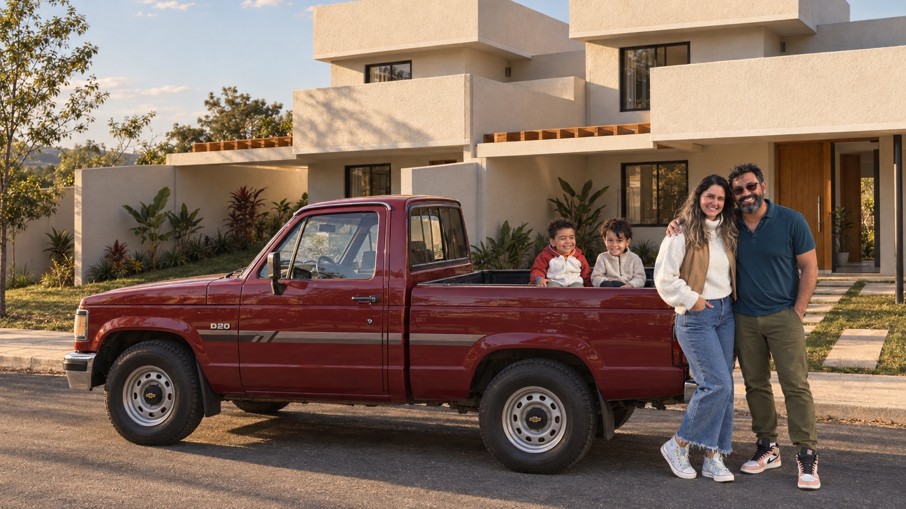
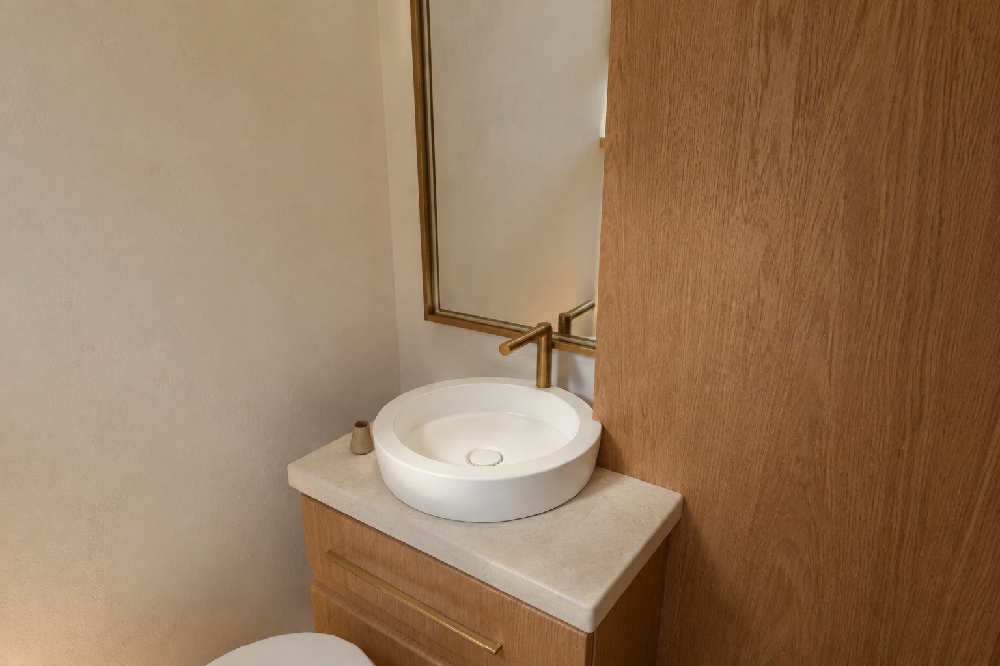
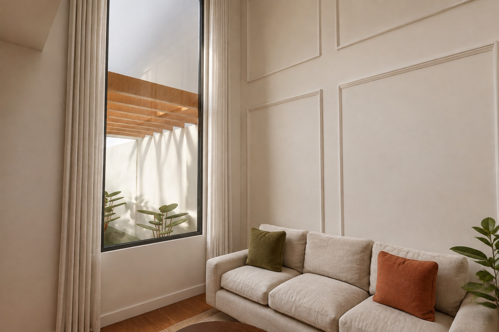
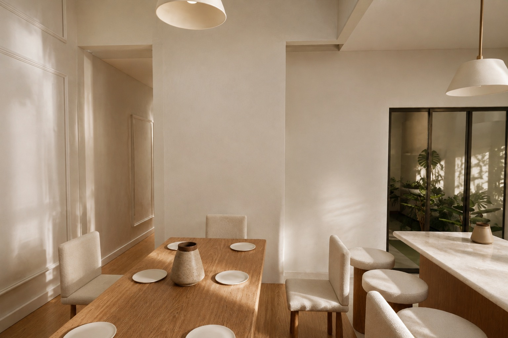

A conversa ganhou espaço.
28,05 m²Sala/copa e cozinha somam 4,34 m² a mais. A ilha e a mesa de jantar aproximam os momentos do dia.

UM LUGAR PARA CRESCER JUNTOS
As crianças brincando, um abraço na chegada e a porta aberta para uma nova história. Já dá para imaginar a vida de vocês aqui.
Venham conhecer sua casa Ver os ambientesOUTRO LUGAR, UM NOVO OLHAR
Madeira com textura, tecidos acolhedores e uma luz que convida a ficar. Estas são as referências de acabamento da visita pelos ambientes.

Ver detalhes
Ver detalhesProposta de ambientação com IA. A visita 360° permite olhar ao redor de cada ponto; o modo 3D aplica as imagens à geometria e permite deslocamento. O acabamento pode interpretar detalhes de decoração e apresentar variações nas transições. O arquivo Blender inclui as imagens utilizadas.
Meu amigo,
Você me mostrou uma planta. Eu comecei a imaginar a vida acontecendo nela: a família em volta da mesa, o café na cozinha, a luz entrando na sala e o silêncio gostoso do seu quarto.
Então preparei essa visita. Para você sair um pouco das linhas do papel e enxergar o lugar que está construindo. Com os espaços do seu novo projeto e uma proposta de interiores cheia de calor, textura e cuidado.
Essa casa vai guardar muita coisa boa.
E eu queria comemorar esse começo com você.

O novo desenho reorganizou a casa. Estas são as diferenças que mais fazem a gente imaginar como vai ser viver aqui.
Sala/copa e cozinha somam 4,34 m² a mais. A ilha e a mesa de jantar aproximam os momentos do dia.
O quarto da suíte tem 11,84 m² e agora recebe um closet separado. A porta dos fundos se abre para um jardim reservado.
Um dos quartos ganhou 3,97 m². As duas camas desenhadas na planta deixam fácil imaginar irmãos, hóspedes e novas possibilidades.
A área construída ficou praticamente a mesma: 104,75 m² por casa. Para acomodar essa nova distribuição, garagem, serviço, banheiros e área permeável ficaram menores. O verde se reparte entre a frente, a lateral e os fundos.
| Ambiente | Versão anterior | Novo projeto | O que mudou |
|---|---|---|---|
| Área construída por casa | 104,93 m² | 104,75 m² | −0,18 m² |
| Sala/copa | 15,00 m² | 17,37 m² | +2,37 m² |
| Cozinha | 8,71 m² | 10,68 m² | +1,97 m² |
| Quarto maior | 7,64 m² | 11,61 m² | +3,97 m² |
| Quarto menor | 7,64 m² | 7,64 m² | Sem alteração |
| Suíte + closet | 16,75 m² · sem closet separado | 11,84 + 4,76 m² | 16,60 m² em dois ambientes |
| Banho da suíte | 3,64 m² | 3,44 m² | −0,20 m² |
| Banho social | 3,30 m² | 2,73 m² | −0,57 m² |
| Área de serviço | 3,45 m² | 2,39 m² | −1,06 m² |
| Circulação | 5,18 m² | 5,81 m² | +0,63 m² |
| Garagem | 19,25 m² | 16,59 m² | −2,66 m² |
| Área permeável por casa | 34,48 m² | 30,42 m² | −4,06 m² |
Comparação com as áreas registradas na apresentação anterior. A arquitetura desta versão vem exclusivamente do PDF 222. O novo desenho não indica uma churrasqueira nem um ambiente separado chamado lazer.
INTERIORES · CLÁSSICO ACOLHEDOR
Escolhi uma atmosfera de casa vivida: madeira quente, tecidos gostosos, molduras delicadas e luz natural. Para você imaginar seus objetos, sua família e sua vida aqui.
32 imagens · 28 perspectivas ambientadas e quatro vistas 3D
17,37 m² · sala/copa
10,68 m² · cozinha
11,84 m² · área de dormir
4,76 m² · closet
11,61 m²
2,76 m² permeáveis nos fundos
Rua PB-46 · Anápolis
Frente das duas residências
16,59 m² · garagem
Pergolado descoberto
Sala/copa · seis lugares na planta
4,40 m de pé-direito livre
Bancada, ilha e marcenaria
28,05 m² · sala/copa + cozinha
7,64 m²
Janela de 1,50 × 1,00 m
3,97 m² a mais que antes
Porta de 2,00 × 2,10 m
Marcenaria proposta em carvalho
2,73 m² · banho social
Bancada do banho social
3,44 m² · banho da suíte
Pedra clara e madeira
2,39 m² · área de serviço
Lavanderia compacta
5,81 m² · circulação
Molduras discretas e luz quente
4,81 m² permeáveis na lateral
104,75 m² · unidade à esquerda
104,75 m² · unidade à direita
209,50 m² · duas residências
Lote de 12 × 25 m
As perspectivas recebem ambientação com IA sobre vistas do modelo. Materiais, mobiliário e paisagismo são propostas ilustrativas. As plantas 3D mostram a geometria; consulte também a prancha original.
Da entrada ao jardim da suíte, cada espaço encontra o próximo. Toque em um ambiente para voltar até ele.
Áreas declaradas na planta. Os 104,75 m² construídos de cada unidade incluem paredes e seguem o quadro de áreas. As duas casas repetem a distribuição.
Guardar a planta 3DUma volta pelos ambientes para assistir com a família e começar a imaginar a casa juntos.
Filme de perspectivas ambientadas. Para caminhar pelo modelo, use a visita 3D no início da página.
A planta mostra onde tudo fica. Os cortes mostram as alturas. A cobertura fecha os volumes. É desse encontro que nasceu a maquete.
As duas unidades do novo projeto. Na cobertura, a casa à esquerda é a 02 e a da direita, a 01.
PARA CRIAR OUTRAS VISITAS
O processo parte do mesmo modelo para manter paredes, móveis e materiais consistentes em todos os ângulos. Deixei o prompt e as orientações de produção para você guardar.
UM BRINDE A ESSE COMEÇO
Que venham a primeira chave, o primeiro café e muitas razões para abrir a porta para os amigos.
Além das imagens, deixei o modelo em escala e a versão editável para explorar e conversar sobre os detalhes com o engenheiro.
Modelo 3DglTF com texturas · arquivo ZIPBlender com acabamento fotográficoGeometria editável · texturas incluídasPanoramas 360°26 vistas com acabamento fotográficoÁlbum completoAmbientes e plantas 3DNo modo 3D livre, arraste para olhar e use as setas para andar ao redor dos móveis. Sala e cozinha permitem circulação integrada; o seletor leva aos demais ambientes. No modo Giro 360°, você gira a vista a partir de dois pontos renderizados em cada cômodo. As 26 vistas partem da cena Blender e recebem acabamento fotográfico com IA. No modo 3D, esse acabamento é projetado sobre a geometria, com profundidade e paralaxe; detalhes de decoração podem variar entre as imagens. O modelo usa o PDF 222; a decoração continua sendo uma proposta de ambientação.
A reconstrução usa exclusivamente a planta, os cortes e a cobertura do PDF 222: lote de 12 × 25 m, paredes de 12 cm, posições das aberturas e níveis de piso. O quarto maior, o closet e o jardim dos fundos foram refeitos para esta versão. As áreas são as declaradas pelo projeto.
Madeira, boiseries, tecidos, móveis, iluminação decorativa e paisagismo traduzem as duas referências de estilo enviadas. São uma proposta de interiores, sem constituir especificação de obra. As perspectivas ambientadas com IA podem interpretar acabamentos e detalhes; as plantas 3D vêm diretamente do modelo.
O corte indica 4,40 m livres na sala: piso +0,10 m até a face inferior da laje +4,50 m. Nos quartos, são 2,80 m. A janela frontal mede 1,20 × 3,50 m, com peitoril de 0,70 m. Junções de cobertura, portões, muros e esquadrias precisam da conferência do autor; o fechamento frontal foi seccionado na apresentação para revelar o jardim. A prancha não detalha camadas estruturais, sistemas de fachada ou interiores. Esta reconstrução visual ainda não é um modelo executivo validado.
Projeto arquitetônico de Joaquim Ricelli Ribeiro · JRR Projetos & Engenharia. Rua PB-46, Anápolis, Goiás. A numeração das unidades segue a planta de cobertura: Casa 02 à esquerda e Casa 01 à direita. Esta apresentação é um presente de Leandro para celebrar a casa.
{kind=link}